Belleville office1610 W Main St, Belleville, IL 62220
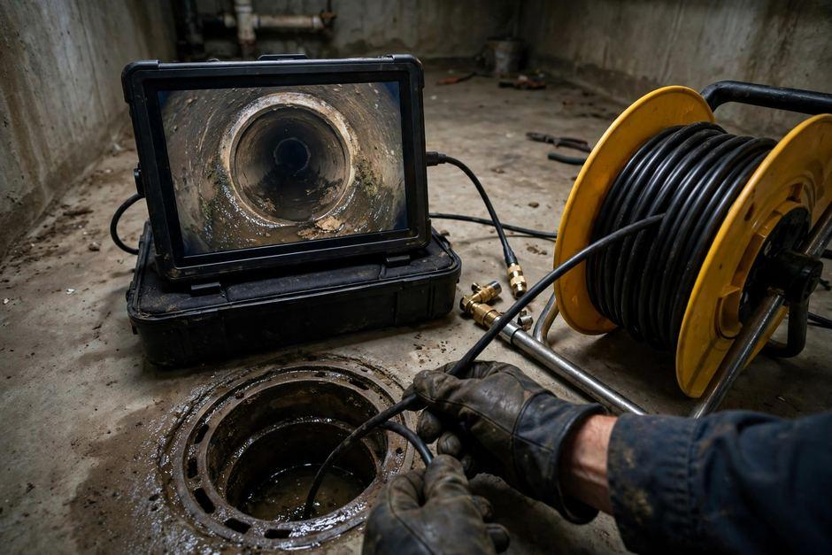
Hinkle Plumbing Company
Plumbing Services in Belleville, Illinois
Thirty service pages describe the plumbing work covered on this site, from urgent repairs to planned replacements. Each page states its scope plainly, with Belleville housing, sewer, and code context where it applies. Call (618) 677-6556 during office hours to discuss a problem.
Call(618) 677-6556
Google rating5.0 from 3 reviews
Office hoursMonday through Friday, 8:00 AM to 4:30 PM. Closed Saturday and Sunday.
Belleville, ILBased at 1610 W Main St
All Services
Every service, stated plainly
The rows below list each service with a short label and a scope summary. Open a service page for full detail, including Belleville context and related services.
01!Urgent help
Emergency Plumbing Services
Burst pipes, sewer backups, flooding, and no hot water are handled by phone during office hours. For a gas smell, leave the building and call the utility or 911 first.
Explore Emergency Plumbing Services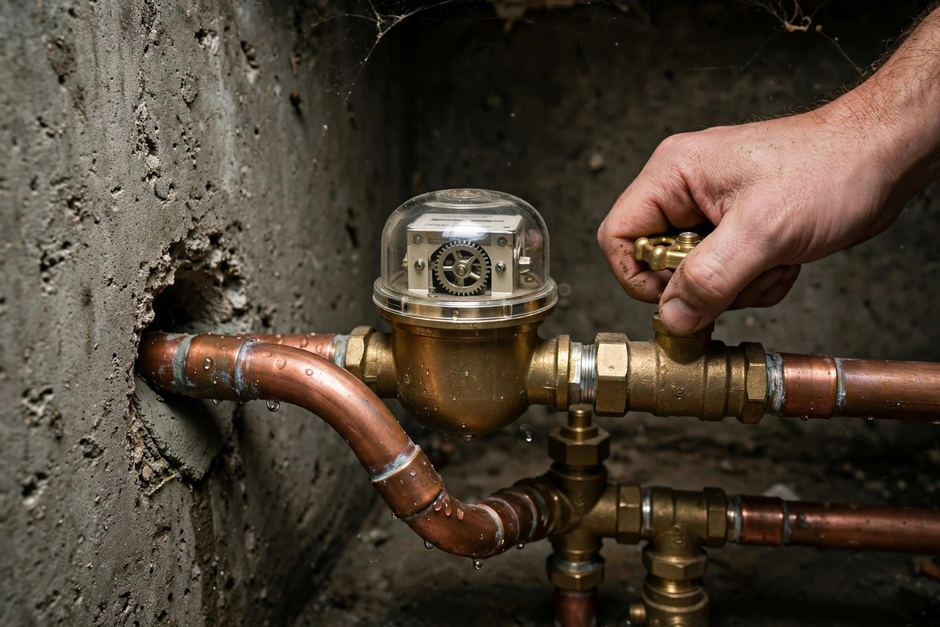
02↯Whole-home care
Residential Plumbing
Repairs, leaks, drains, sewers, and water heaters for houses across Belleville's housing eras. Scope follows the materials present, from galvanized and clay to copper and PEX.
Explore Residential Plumbing
03♨Business properties
Commercial Plumbing
Repairs, drains, sewers, and water heaters for commercial buildings, scoped to building use and code requirements. Grease, shared lines, and fixture counts shape the discussion.
Explore Commercial Plumbing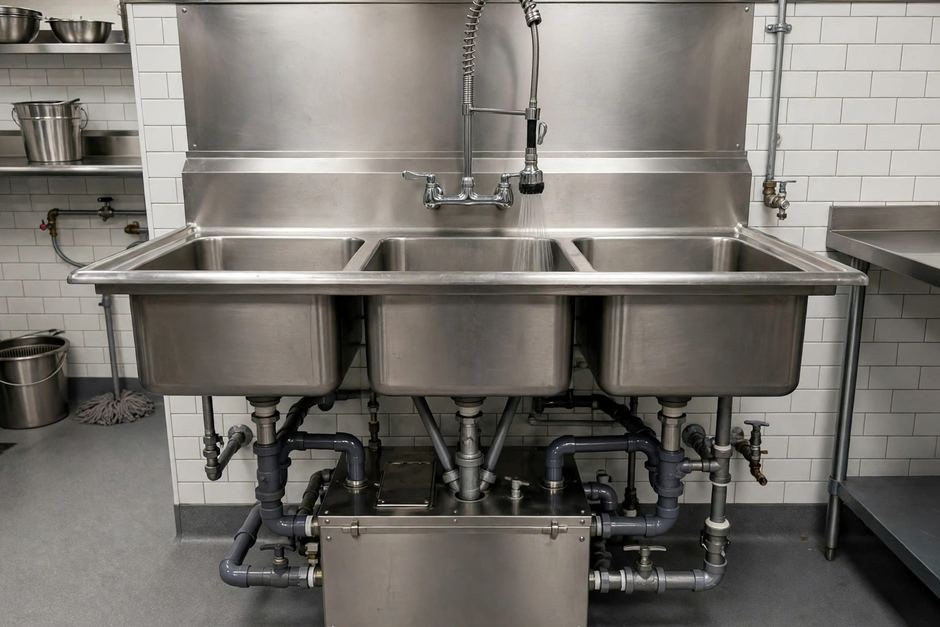
04⚑Everyday repairs
Plumbing Repairs
Fixture, valve, joint, and appliance-connection repairs across the house. Each repair follows detection findings and the condition of the adjoining pipe, with permits checked where they apply.
Explore Plumbing Repairs05!Clearing clogs
Drain Cleaning
Snaking and cable clearing for kitchen, bath, laundry, and main lines. Clearing is matched to the line material, and recurring clogs point toward a camera inspection.
Explore Drain Cleaning
06↯Backup response
Sewer Backup
Backups from clay laterals, root intrusion, and combined-sewer surcharge in heavy rain. Camera footage separates a clog from a break, and backwater valve options are discussed per address.
Explore Sewer Backup
07♨See inside lines
Sewer Camera Inspection
Recorded video shows joints, roots, offsets, bellies, and breaks in laterals and main lines. Footage establishes defect position relative to the property line and guides repair scope.
Explore Sewer Camera Inspection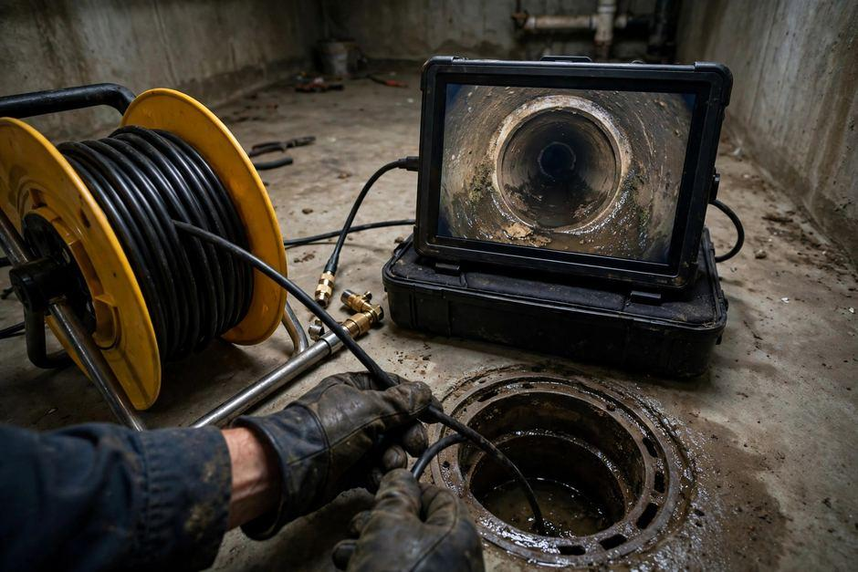
08⚑Spot repairs
Sewer Line Repair
Spot repairs for isolated defects in clay or cast-iron laterals. The owner owns the lateral to the main, and readers should check current City program details for the beyond-property-line portion.
Explore Sewer Line Repair
09!Full replacement
Sewer Line Replacement
Full lateral replacement for lines at end of life, with depth, soil, street work, and the property-line split shaping scope. Camera footage and the City process come before payment for the outer section.
Explore Sewer Line Replacement
10↯Less digging
Trenchless Sewer Repair
Pipe bursting and lining preserve driveways, landscaping, and mature trees where the line allows. Collapsed pipe, severe offsets, and bellies rule the method out, and camera inspection is the eligibility gate.
Explore Trenchless Sewer Repair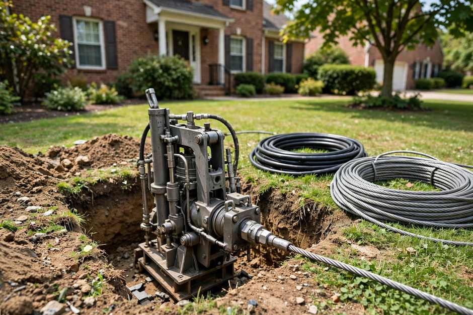
11♨Scouring lines
Hydro Jetting
High-pressure scouring clears grease, scale, and roots that snaking only pierces. A camera pass comes first, since jetting a cracked or collapsed pipe makes the damage worse.
Explore Hydro Jetting
12⚑Finding hidden leaks
Leak Detection
Meter tests, acoustic listening, thermal imaging, and pressure testing locate hidden leaks. Detection is the diagnostic service, distinct from repair, and narrows the search before surfaces are opened.
Explore Leak Detection
13!Fixing leaks
Leak Repair
Repairs at joints, valves, supply runs, and fixtures, following detection findings. The repair scope weighs the condition of the adjoining pipe, not only the leaking section.
Explore Leak Repair
14↯Under-slab leaks
Slab Leak
Leaks under a basement floor slab or slab-on-grade, framed honestly: no Belleville prevalence figure exists. Clay soil movement, corrosion, freeze-thaw, and pressure cycles are the stated causes.
Explore Slab Leak
15♨New supply lines
Repiping
Whole-house supply replacement for galvanized and mixed-metal systems at end of life. PEX and copper are the material discussion, with drywall patching and fixture counts shaping scope.
Explore Repiping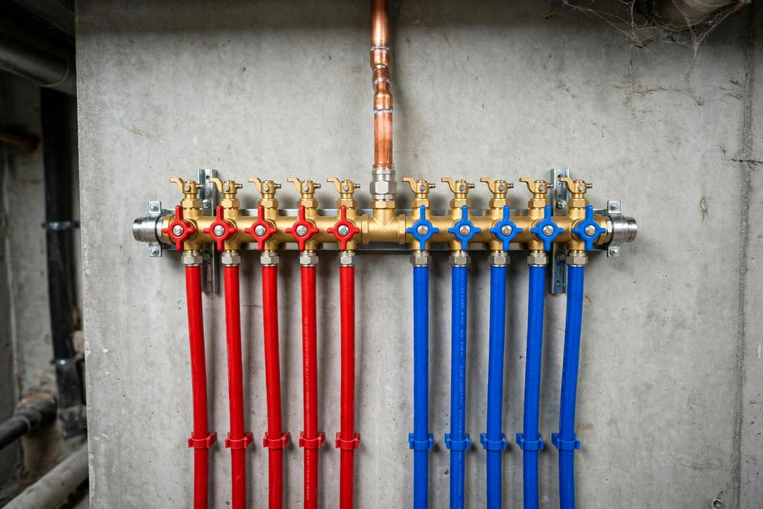
16⚑Service line work
Main Water Line Replacement
Replacement of leaking, corroded, or restricted service lines. Readers should check the water provider's service-line inventory and replacement program before paying for any lead-line replacement.
Explore Main Water Line Replacement
17!Repair first
Water Heater Repair
No hot water, rumbling, leaks at fittings, and control faults are the usual repair questions. Repair-or-replace scope follows tank condition, venting, and age, with permits checked.
Explore Water Heater Repair
18↯New water heaters
Water Heater Installation
Like-for-like tank replacement, with sizing, expansion, venting, and code corrections as the decision points. Hot water heaters require an electrical or gas permit under the City permit rule.
Explore Water Heater Installation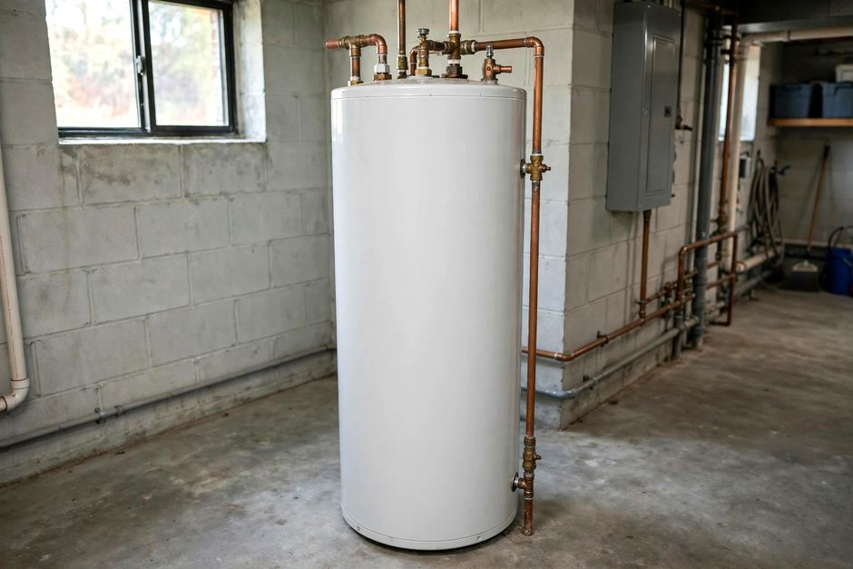
19♨Tankless systems
Tankless Water Heater Services
Tankless conversion is a sizing and venting decision, not a like-for-like swap. Gas-line capacity, venting, condensate drainage, and descaling for mineral scale shape the discussion.
Explore Tankless Water Heater Services
20⚑Basement cluster
Basement Plumbing
A cluster, not one job: basement bathrooms, ejectors, floor drains, sump pumps, and slab leaks. Each question is diagnosed on its own, with sewer surcharge and groundwater separated by inspection.
Explore Basement Plumbing
21!Basement protection
Sump Pump
Sizing, battery backup, and discharge routing for pumps that protect basements from groundwater and storm inflow. Current City guidance for discharge is checked for the property.
Explore Sump Pump
22↯Taste and sediment
Water Filtration
Whole-house carbon and sediment filtration and point-of-use reverse osmosis target taste, odor, chlorine, and sediment in drinking water. Filtration does not remove the minerals that form scale.
Explore Water Filtration
23♨Scale control
Water Softener
Salt-based ion exchange softens water, while conditioners without salt do not produce soft water. No hardness figure is stated here; sizing follows a tap test or the utility report, never a citywide average.
Explore Water Softener
24⚑Freeze damage
Burst and Frozen Pipe Repair
One arc from freeze to split to leak at thaw: shutoff, repair, and protection for exposed runs. Crawl spaces, exterior walls, and unheated spaces are the exposed locations.
Explore Burst and Frozen Pipe Repair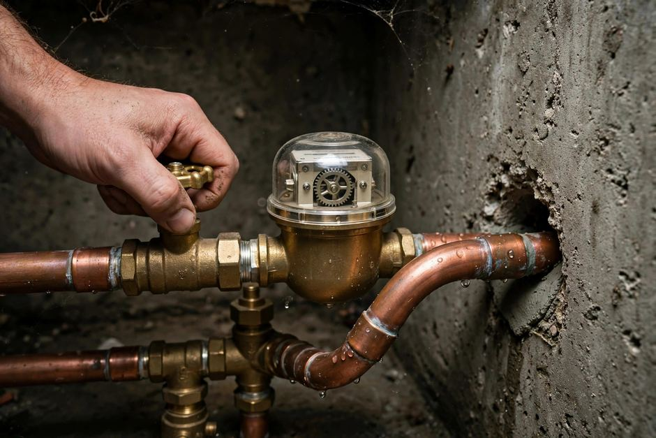
25!Toilets
Toilet Repair
Running toilets, weak flushes, leaking bases, and rocking bowls. Direct replacement of a toilet is permit-exempt under the City rule, and seized shutoffs in older homes are checked.
Explore Toilet Repair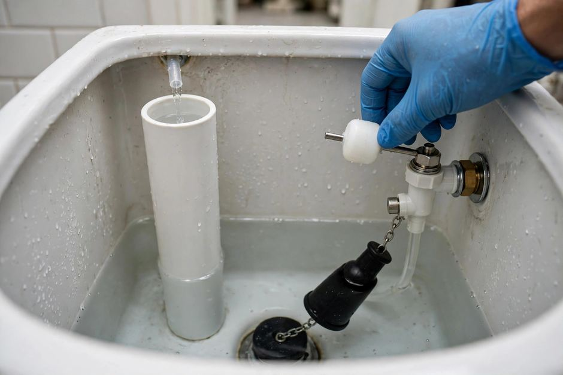
26↯Faucets
Faucet Repair
Cartridge and seal failures in kitchen, bath, and utility faucets. Direct replacement of a faucet is permit-exempt under the City rule, and mineral deposits on seats are checked.
Explore Faucet Repair
27♨Sinks
Sink Repair
Leaks at traps, drains, and supply connections, plus worn strainers and loose mounts. Direct replacement of a sink is permit-exempt under the City rule, and supply-line condition in older homes is checked.
Explore Sink Repair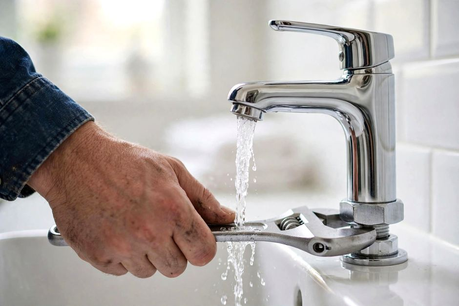
28⚑Bathtubs
Bathtub Repair
Leaking faucets, slow drains, worn stoppers, and failing seals around tubs. Access through finished walls and the condition of the waste and overflow shape the repair scope.
Explore Bathtub Repair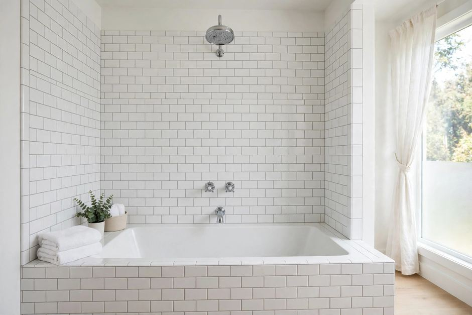
29!Showers
Shower Repair
Cartridge failures, leaking valves, clogged heads, and drain problems in showers. Valve access and the condition of the supply and drain connections shape the repair scope.
Explore Shower Repair
30↯Disposals
Garbage Disposal Repair
Jammed, humming, leaking, or dead disposals. Repair-or-replace scope follows the unit's condition and the drain and electrical connections serving it, with no brand authorization claimed.
Explore Garbage Disposal Repair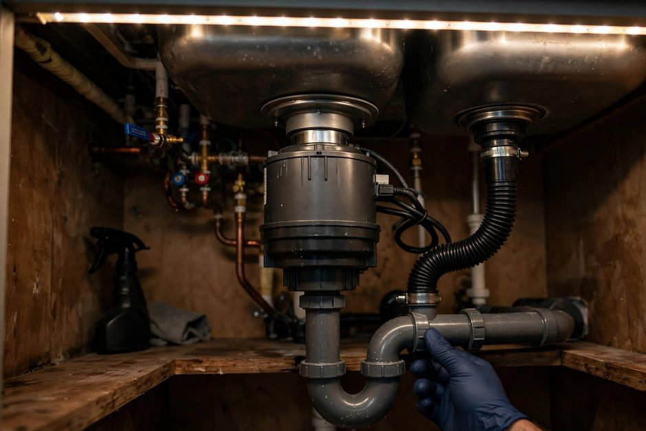
Not sure which category fits? Tell us what you see, hear, or smell and we'll route the right technician.
Describe the problemHow Work Proceeds
From phone call to finished work
The steps flex with the condition of the job, but the sequence stays the same.
Call during office hours
Call (618) 677-6556 during office hours: Monday through Friday, 8:00 AM to 4:30 PM. Closed Saturday and Sunday. Describe the problem and what has changed.
Assessment and diagnosis
Camera, detection, and pressure checks establish what is failing. Findings are shared plainly before scope is discussed.
Scope discussion
Repair and replacement options are discussed with the factors shaping each one. Permit and review requirements are confirmed at this stage.
Work under permit
Work proceeds under the permits and inspections that apply. Systems are left uncovered until tested and approved, as the code requires.
How Scope Is Set
Evidence first, scope second
Every service page follows the same discipline: diagnosis first, honest limits stated, and scope set from what is found.

5.0Google rating from 3 reviews
Questions
Questions about services
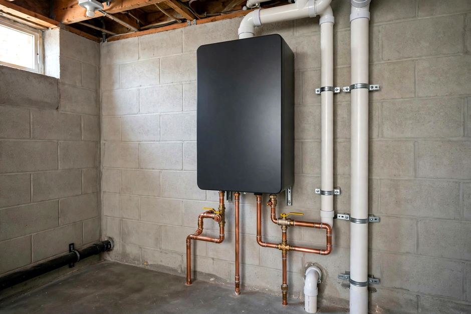
Still unsure? Our team can help identify the safest immediate step and the right appointment type.
Ask us nowDo plumbing jobs need a permit?
The City of Belleville requires a permit before plumbing work begins (§152.05(A)); direct replacement of a toilet, sink, faucet, or other appliance is exempt, except hot water heaters require an electrical or gas permit (§152.05(B)(3)). Permit questions for a specific job are discussed by phone during office hours.
What should be checked before a service line is replaced?
Service-line material should be checked through the water provider's inventory and replacement program before any replacement is scoped, since lead-line replacement follows the provider's program and state law restricts partial replacements. No Belleville lead-line count or cost policy is stated here. Non-lead replacement for leaks, corrosion, low pressure, and freeze damage is the plumber's scope.
What is the City Sewer Lateral Repair Program?
The City operates a Sewer Lateral Repair Program covering the portion of a defective lateral beyond the property line, while the owner remains responsible from the foundation to the property line. Readers should check current City program details for terms, since figures and requirements can change. A camera inspection establishes where a defect sits.
How should freeze season be handled?
Belleville SIU station 110510 recorded about 100.3 days a year with lows at or below 32°F in its 1971–2000 normals, with median first fall freeze October 12 and median last spring freeze April 12. Hose-bib shutoff, pipe insulation, and sump and discharge checks belong before the first freeze, and pipes split on freezing and leak at thaw.
Mon–Fri 8:00 AM–4:30 PM
Discuss a service by phone
Call Hinkle Plumbing Company at (618) 677-6556 Monday through Friday, 8:00 AM to 4:30 PM. Closed Saturday and Sunday. Describe the problem and the building, and the scope factors will be discussed from there.

Contact
Phone, address, and hours
Hinkle Plumbing Company, 1610 W Main St, Belleville, IL 62220. Call (618) 677-6556 Monday through Friday, 8:00 AM to 4:30 PM. Closed Saturday and Sunday. Contact is by phone; this site has no contact form.